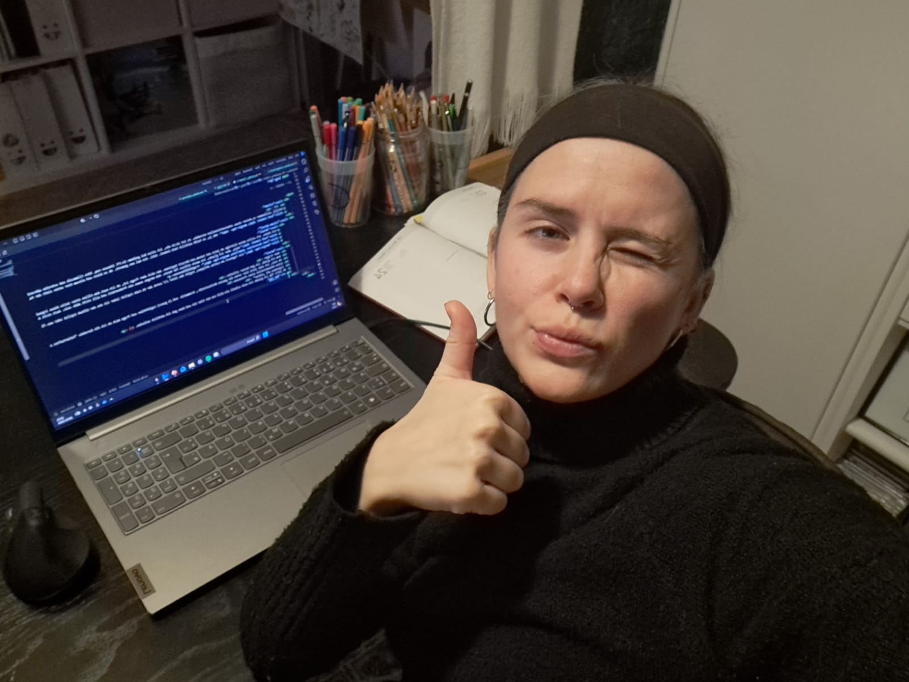

Hejjjj, willkommen zu meiner etwas unkonventionellen Kursdoku. Es ist 22:15 Uhr, ich sitze bei goddamn 19.5°C Zuhause rum, höre Filmmusik und schreibe währenddessen hier ein paar Zeilen, oder eigentlich eher eine ganz lange lange Zeile, weil ich habe kein World Wrap oder wie das heißt an, in VS Code. Mir kommt das gerade ein wenig wie Ècriture Automatique vor (hatten wir damals im ersten Semester oder so) nur eben am Laptop. So. Auf jeden Fall. Macht das gerade tatsächlich sogar Spaß, weil ich in letzter Zeit echt besser im Tippen geworden bin und ich mich darum schnell hier dokumentieren kann. Oder eben meine Gedanken dokumentieren kann. Wenn ich das händisch schreiben würde, würde das viel länger dauern PLUS es könnte niemand lesen hahah. Was mich nur ein wenig stört, sind die Markierungen und Vorschläge von VS Code. Lass mich einfach mal machen, bitte. Ok, der Absatz hier sieht irgendwie nicht so nice aus, ich glaube ich setze ein text-indent oder wie das heißt.
OMG ja, es heißt wirklich text-indent. Hihi. Ein mal was gemerkt. Ok so klein und einsam hier unten sieht der Paragraph ein wenig komisch aus aber egal, kist jetzt so. Ah, ich glaube es würde Sinn ergeben, das hier wie ein HTML-Tagebuch zu gestalten. Bezogen auf das Masterprojekt ofc.
Ich denke, ich sollte meine Einträge ab jetzt mit Datum und Uhrzeit beginnen. Was mich aber frage ist, ob ich nach dem Füllen einer Seite diese irgendwie abspeichern sollte. Wenn ich das CSS noch mal anpasse, und das sollte ich, weil so wie es gerade ist sieht es kinda whack aus, dann ändert sich ja alles noch mal. Und da mein CSS aktuell weder besonders komplex noch besonders smooth ist, werden sich ja dann Zeilenlängen verschieben und Text möglicherweise einfach aus dem unteren Seitenrand laufen. Uff.
Naja, aber ich glaube, ich mache Schluss für heute. Hab morgen sowas wie Probearbeit und will nicht müde sein. Auch nicht müde im Kopf. Denn diese gnazen Lines an Text vor mir machen ich evtl. ohne, dass ich es gerade merken würde schon müde. Um meinen inspirierten Zustand gerade aber noch zu nutzen, schreibe ich glaube ich noch ein paar Fragen, die ich an meine Kursdoku und diesen weirden Prozess habe auf. Ah, und wenn ich das so wirklich durchziehe muss ich irgendwie auch noch einen Throwback Teil zum bisherigen Verlaufs des Semesters einbauen. Upps.
Fragööööööönnnnnn
Ein Tagebuch am Laptop abtippen, ergibt das Sinn? /// Lernt der VS Code Copilot (oder ist das der Github Copilot oder was für eine KI ist das überhaupt, ich hab einfach gar keine Ahnung) zu viel über mich, wenn ich hierbei zu authentisch und viel schreibe? Oder ist das gut?
Ok jetzt füg ich glaube ich noch schnell ein Bild von mir hier ein und dann geh ich wirklich schlafen. :))

JAAA hat geklappt! Ok ciao jetzt echt.